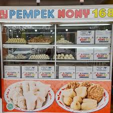
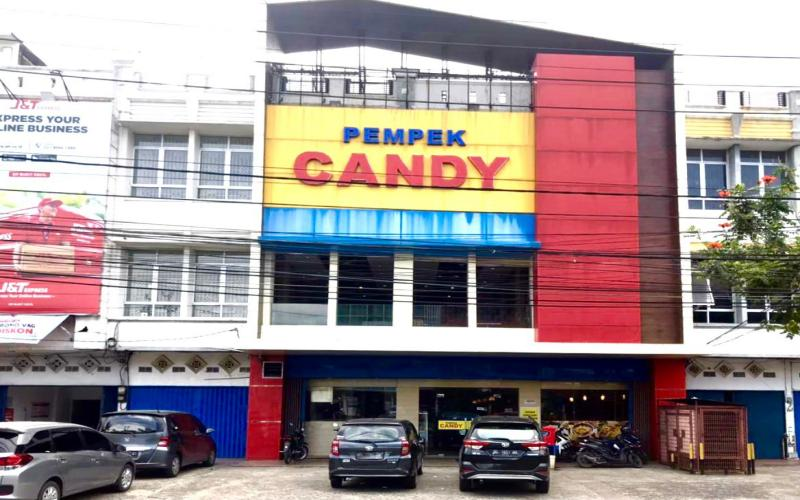
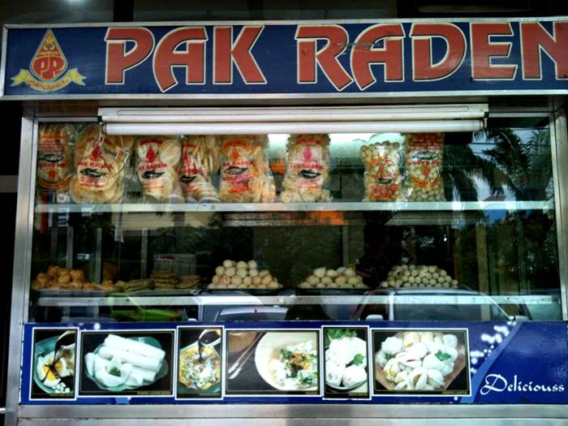
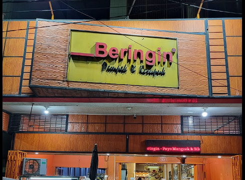

Jl. Letkol Iskandar No.541-542, 24 Ilir, Kec. Bukit Kecil, Kota Palembang, Sumatera Selatan 30314

Pempek Nony 168
Jl. Jend. Sudirman No.952, 20 Ilir D. III, Kec. Ilir Tim. I, Kota Palembang, Sumatera Selatan 30129

Pempek Candy
Jl. Jend. Sudirman No.149/8, Sungai Pangeran, Kec. Ilir Tim. I, Kota Palembang, Sumatera Selatan 30126

Pempek Pak Raden
Jl. Brigjen HM. Dhani Effendi No.80-82, 24 Ilir, Kec. Bukit Kecil, Kota Palembang, Sumatera Selatan 30127
Kedai Cen Cen
Jl. Mayor Salim Batubara No.09, 20 Ilir D II, Kec. Kemuning, Kota Palembang, Sumatera Selatan 30127
Pempek Saga Sudi Mampir
Jl. Merdeka, 22 Ilir, Kec. Bukit Kecil, Kota Palembang, Sumatera Selatan 30113
Kampung pempek 26 ilir
Jl. Beringin Janggut, Talang Semut, Kec. Bukit Kecil, Kota Palembang, Sumatera Selatan 30135

Pempek Beringin
Jl. Lingkaran1 No.20, 9 Ilir, Kec. Ilir Tim. II, Kota Palembang, Sumatera Selatan 30111.
,
Pempek Flamboyant
Alamat: Jl. Radial No.999, 24 Ilir, Kec. Bukit Kecil, Kota Palembang, Sumatera Selatan 30134
Pempek Flamboyant Asli Khas dari Palembang. Terbuat dari Ikan Tenggiri di campur dengan Ikan Gabus yang akan menambah cita rasa khas tersendiri dari produk kami. Bahan baku menggunakan Bahan Premium, sehingga memiliki rasa yang berbeda dari pempek lainnya.